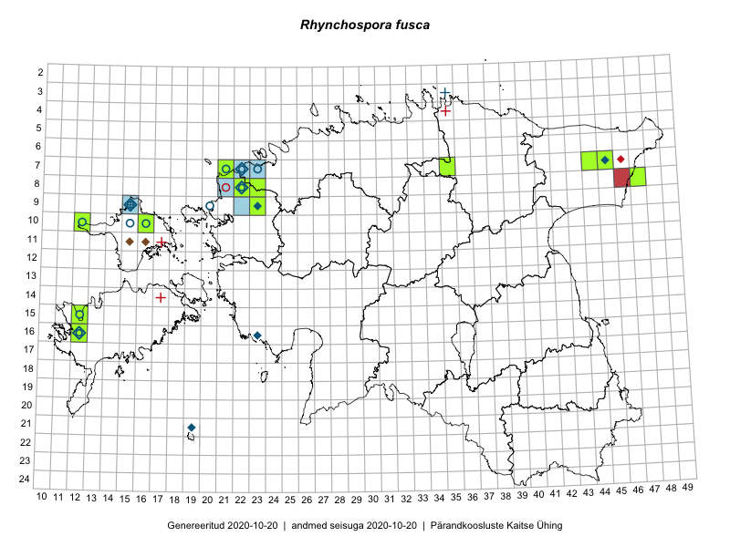

Rhynchospora fusca
Uuendatud: 2016-12-07
Kaardile koondatud taksonid: Rhynchospora fusca (L.) W.T.Aiton

Kaart põhineb 23 kirjel, neist vaatlusi 20 ja eksemplare 3. Taksonit on leitud 8 ruudust.
| Ruut | Vaatleja(d) | Vaatlusaeg | Kirje tüüp | Viide andmebaasikirjele |
|---|---|---|---|---|
| 07-44 | Tiit Hallikma, Toomas Kukk | 2015-07-20 | ruut/ala | vaata PlutoFis |
| 07-45 | Ott Luuk, Hannes Pehlak | 2015-07-22 | ruut/ala | vaata PlutoFis |
| 08-47 | Meeli Mesipuu, Timo Luhamäe | 2015-07-21 | ruut/ala | vaata PlutoFis |
| 10-16 | Ott Luuk | 2014-08-28 | ruut/ala | vaata PlutoFis |
| 16-12 | Mari Reitalu, Triin Reitalu | 2015-07-20 | ruut/ala | vaata PlutoFis |
| 16-12 | Mari Reitalu, Triin Reitalu | 2015-07-28 | punkt | vaata PlutoFis |
| 08-47 | Timo Luhamäe, Meeli Mesipuu | 2015-07-21 | punkt | vaata PlutoFis |
| 10-16 | Ott Luuk, Peedu Saar | 2014-10-31 | ruut/ala | vaata PlutoFis |
| 10-16 | Peedu Saar, Ott Luuk | 2014-10-31 | punkt | vaata PlutoFis |
| 10-16 | Peedu Saar, Ott Luuk | 2014-10-31 | punkt | vaata PlutoFis |
| 10-16 | Peedu Saar, Ott Luuk | 2014-10-31 | punkt | vaata PlutoFis |
| 08-22 | Marju Erit | 2015-05-24 | ruut/ala | vaata PlutoFis |
| 09-23 | Hanna-Eliisa Luts, Tõnu Ploompuu | 2015-07-16 | ruut/ala | vaata PlutoFis |
| 08-22 | Mari Reitalu, Eerik Leibak | 2016-07-07 | ruut/ala | vaata PlutoFis |
| 08-22 | Mari Reitalu, Eerik Leibak | 2016-07-07 | punkt | vaata PlutoFis |
| 10-16 | Maret Gerz, Meeli Mesipuu | 2016-08-09 | punkt | vaata PlutoFis |
| 08-22 | Mari Reitalu, Triin Reitalu, Sirje Azarov | 2016-07-10 | punkt | vaata PlutoFis |
| 07-21 | Mari Reitalu, Triin Reitalu, Sirje Azarov | 2016-07-09 | ruut/ala | vaata PlutoFis |
| 07-21 | Mari Reitalu, Triin Reitalu, Sirje Azarov | 2016-07-09 | punkt | vaata PlutoFis |
| 08-22 | Marju Erit | 2015-05-24 | ruut/ala | vaata PlutoFis |
| 08-22 | Ott Luuk | 2012-07-07 | eksemplar | vaata PlutoFis |
| 08-22 | Eerik Leibak, Mari Reitalu | 2012-07-07 | eksemplar | vaata PlutoFis |
| 08-22 | Thea Kull, Meeli Mesipuu | 2012-05-31 | eksemplar | vaata PlutoFis |